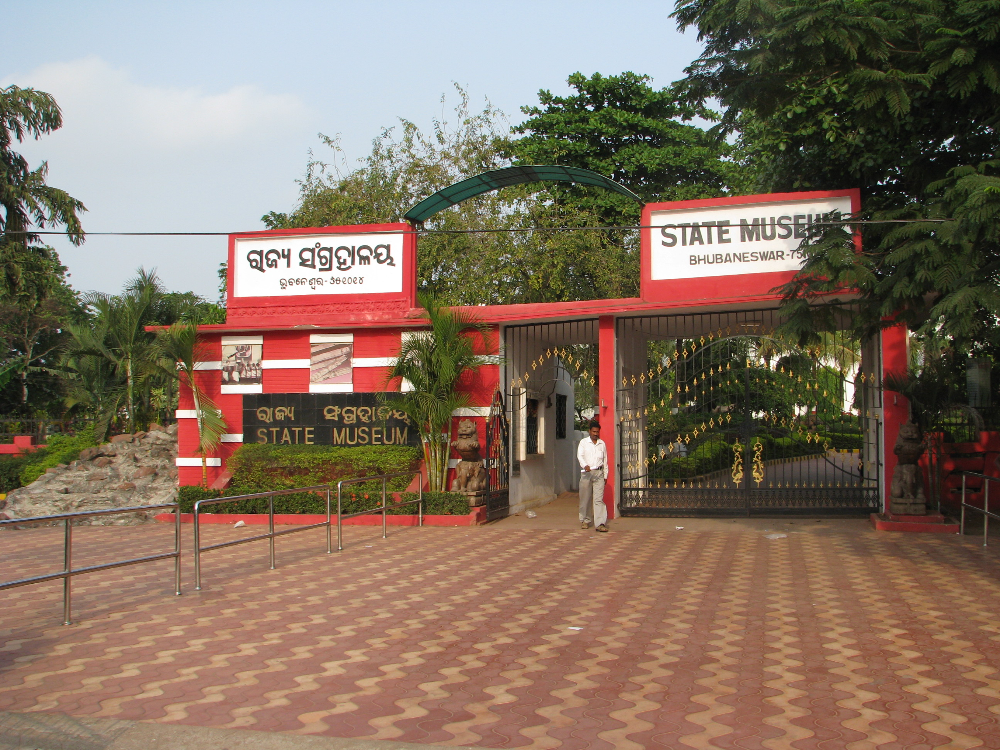

Odisha State Museum is a museum in Bhubaneswar, Odisha. In its original form it was established in 1932 and later moved to the current building in 1960. The museum is divided into eleven sections, viz, Archaeology, Epigraphy, Numismatics, Armoury, Mining & Geology, Natural History, Art & Craft, Contemporary Art, Patta Painting, Anthropology and Palmleaf Manuscripts.
